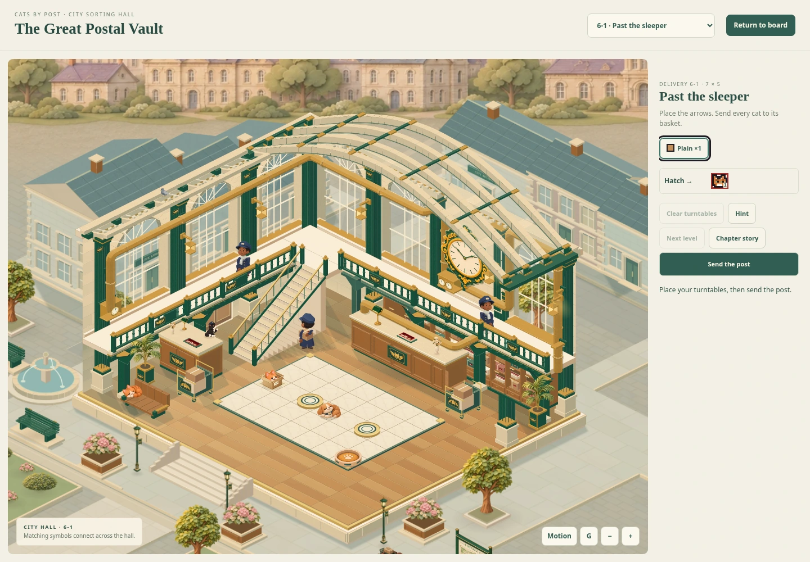
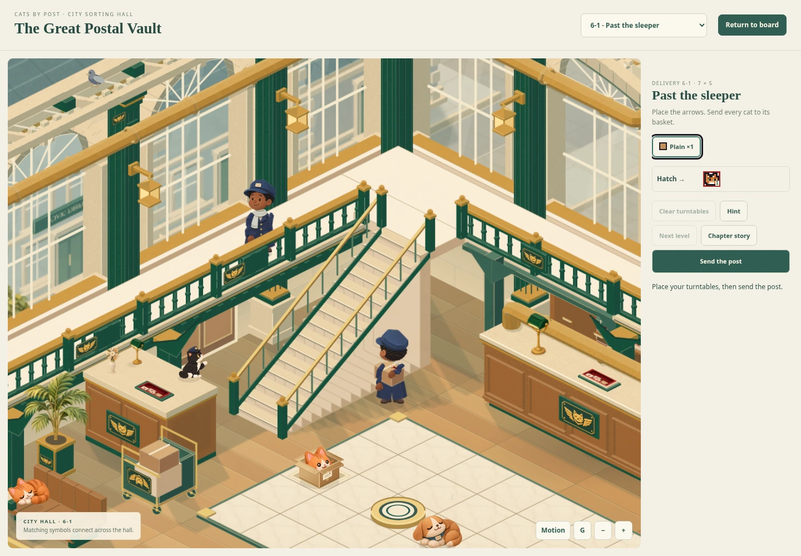
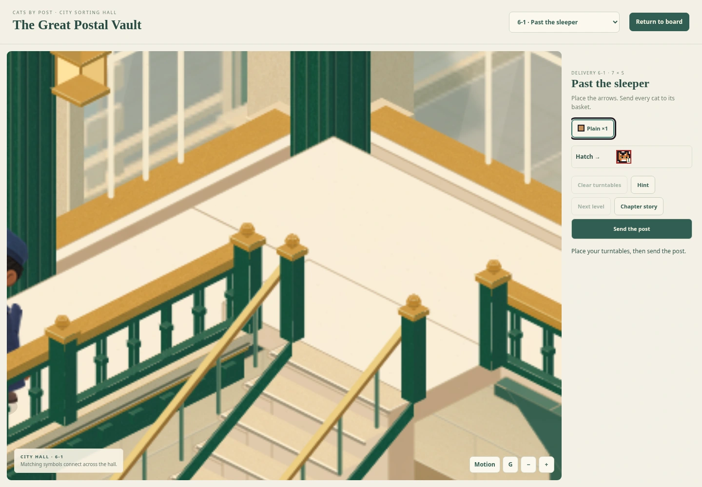
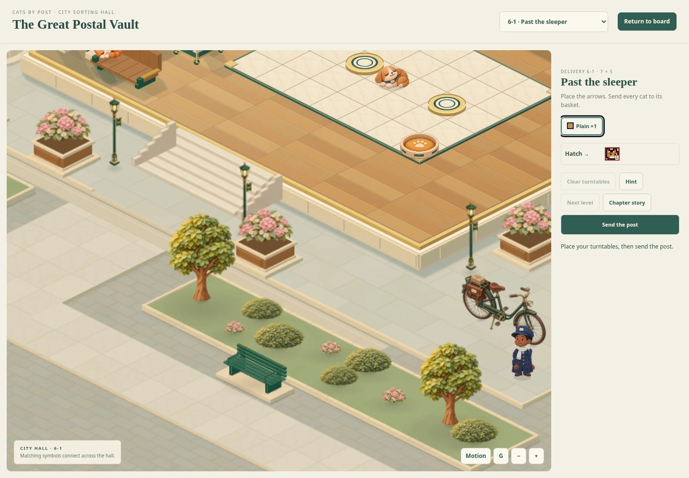
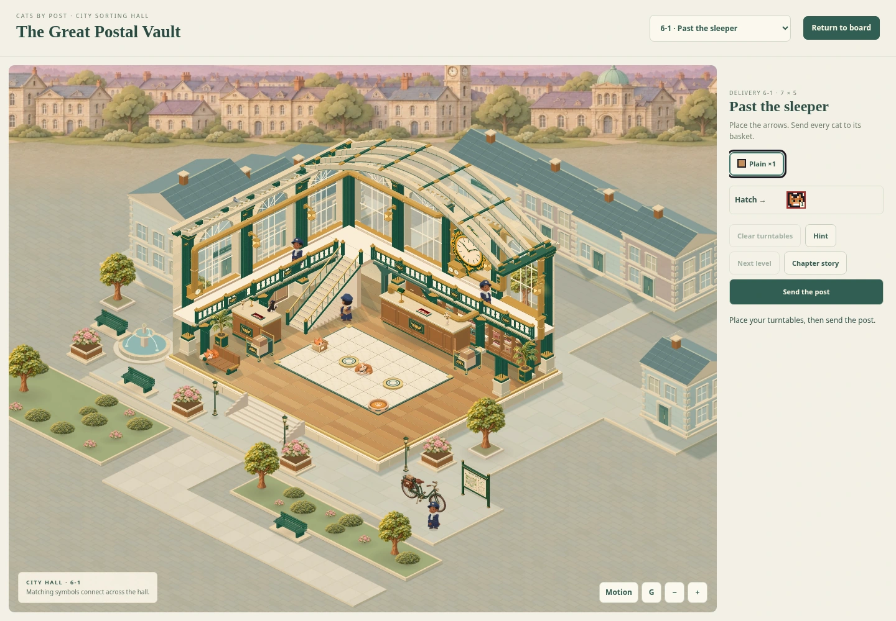
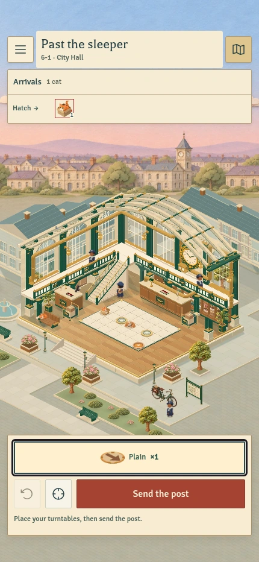
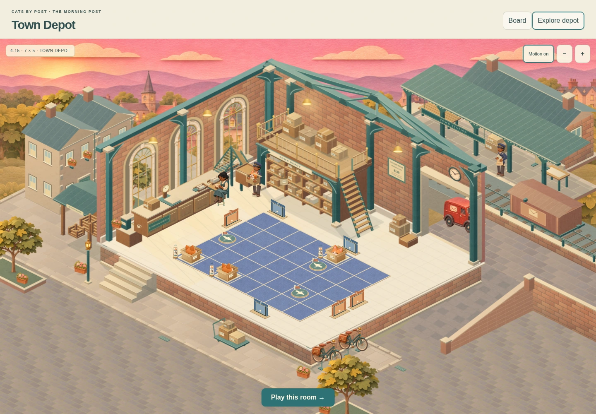
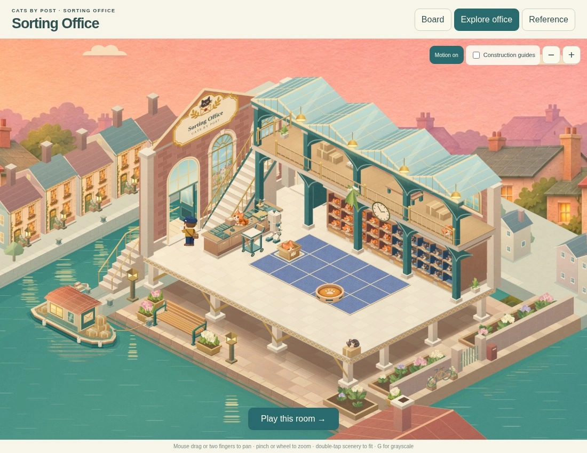

An open landing, clearer edges
The unnecessary rail crossed supported gallery floor. Removing it restores the continuous walkway. The true edge rails remain, with gold concentrated on handrails and main posts. Painted-card edges and deeper window reveals give the construction more depth.

Rails with proper ends
The stair rails now end at their posts and pass in front of the farther gallery rail. Finials have folded gold-paper faces and a shaded base, replacing the flat outlined circles.

Furniture that belongs to the square
Tighter root and footing contacts connect trees, planting beds and furniture to their receiving surfaces. Softer stone joints and a narrower range of slab colours quieten the paved foreground.

A continuous civic setting
The surrounding streets keep their structure, with less repetitive colour and fewer bright joints. The main clock, vault and ivory playing area carry the scene.

The sparse phone view



Largest board on a phone · Desktop finale · Grayscale finale


Beside the reference rooms




City Hall now has cleaner material hierarchy and a quieter foreground. Full parity remains a visual judgement: broad light and depth grouping, and a consistent softness across materials, still deserve comparison at ordinary game size.
Checked in the working build
All 15 deliveries, phone handling, grayscale, progress, offline loading and disposal are checked. The board images, retained artwork, measured room layout and approved paper pipework remain exact.
Regression and browser results · Preserved layout, artwork and pipework · Backdrop coverage · Stair and worker depth checks · Independent Astra review
Cloud Chromium and emulated phones; physical-device and Safari performance remain separate assessments.